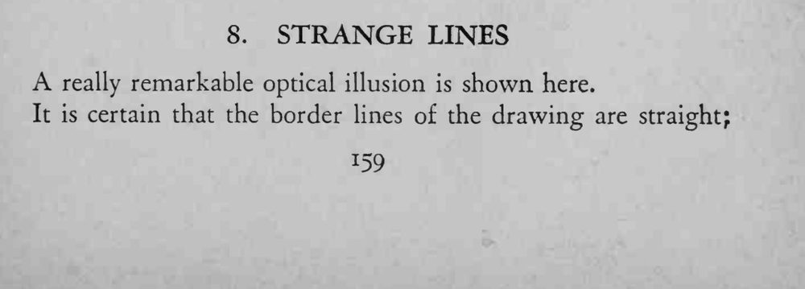
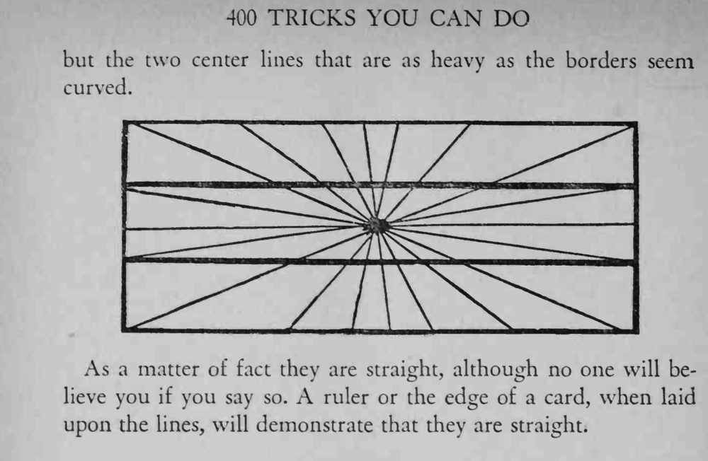

图中两条粗线看起来是弯的，其实和边框一样笔直。
这是线条与背景造成的视觉错觉，用尺子验证最直接。


A really remarkable optical illusion is shown here. It is certain that the border lines of the drawing are straight; but the two center lines that are as heavy as the borders seem curved. As a matter of fact they are straight, although no one will believe you if you say so. A ruler or the edge of a card, when laid upon the lines, will demonstrate that they are straight.